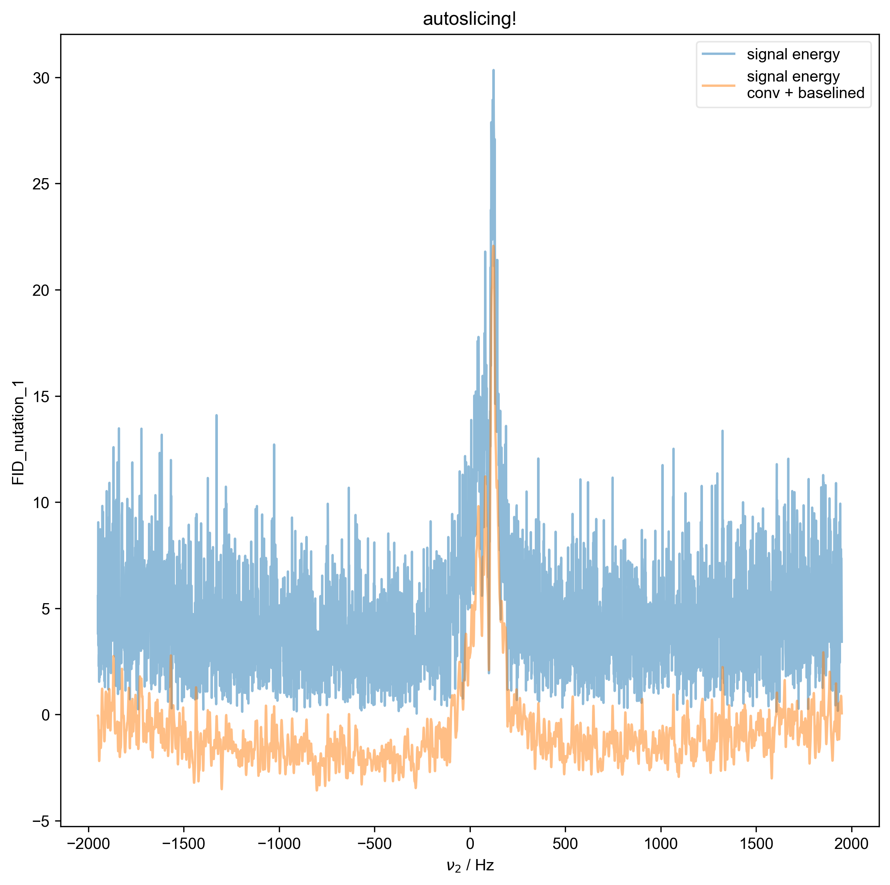
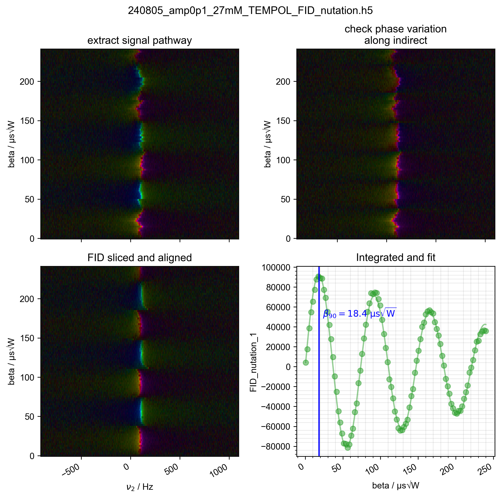

Note
Go to the end to download the full example code
Process FID nutation data¶
py proc_FID_nutation.py NODENAME FILENAME EXP_TYPE
Fourier transforms (and any needed data corrections for older data) are performed according to the postproc_type attribute of the data node. This script plots the result as well as examines the phase variation along the indirect dimension. Finally the data is integrated and fit to a sin function to find the optimal \(\beta_{90}\).
Tested with:
py proc_FID_nutation.py FID_nutation_1 240805_amp0p1_27mM_TEMPOL_FID_nutat ion.h5 ODNP_NMR_comp/nutation
- 
- 
using postproc type spincore_FID_nutation_v1
1: autoslicing!
2: Raw Data with averaged scans
import pyspecdata as psd
import pyspecProcScripts as prscr
import sympy as sp
import sys, os
from numpy import r_
if "SPHINX_GALLERY_RUNNING" in os.environ and os.environ['SPHINX_GALLERY_RUNNING'] == 'True':
sys.argv = [
sys.argv[0],
"FID_nutation_1",
"240805_amp0p1_27mM_TEMPOL_FID_nutation.h5",
"ODNP_NMR_comp/nutation",
]
slice_expansion = 5
assert len(sys.argv) == 4, "intended to be called with file info at cmdline"
s = psd.find_file(
sys.argv[2],
exp_type=sys.argv[3],
expno=sys.argv[1],
lookup=prscr.lookup_table,
)
print("using postproc type", s.get_prop("postproc_type"))
with psd.figlist_var() as fl:
frq_center, frq_half = prscr.find_peakrange(s, fl=fl)
signal_range = tuple(slice_expansion * r_[-1, 1] * frq_half + frq_center)
if "nScans" in s.dimlabels:
s.mean("nScans")
s.set_plot_color(
"g"
) # this affects the 1D plots, but not the images, etc.
# {{{ generate the table of integrals and fit
s, ax_last = prscr.rough_table_of_integrals(
s, signal_range, fl=fl, title=sys.argv[2], echo_like=False
)
A, R, beta_ninety, beta = sp.symbols("A R beta_ninety beta", real=True)
s = psd.lmfitdata(s)
s.functional_form = (
A * sp.exp(-R * beta) * sp.sin(beta / beta_ninety * sp.pi / 2)
)
prefactor_scaling = 10 ** psd.det_unit_prefactor(s.get_units("beta"))
s.set_guess(
A=dict(
value=s.data.max(),
min=s.data.max() * 0.8,
max=s.data.max() * 1.5,
),
R=dict(
value=1e3 * prefactor_scaling, min=0, max=3e4 * prefactor_scaling
),
beta_ninety=dict(
value=20e-6 / prefactor_scaling,
min=0,
max=1000e-6 / prefactor_scaling,
),
)
s.fit()
# }}}
# {{{ show the fit and the β₉₀
fit = s.eval(500)
fl.plot(fit, ax=ax_last)
ax_last.set_title("Integrated and fit")
beta_90 = s.output("beta_ninety") # because we allow
# rough_table_of_integrals to convert to
# human units (with prefactors), this
# will be in human units
ax_last.axvline(beta_90, color="b")
ax_last.text(
beta_90 + 5,
5e4,
r"$\beta_{90} = %0.1f\ \mathrm{μs \sqrt{W}}$" % beta_90,
color="b",
)
# }}}
ax_last.grid()
Total running time of the script: (0 minutes 4.652 seconds)